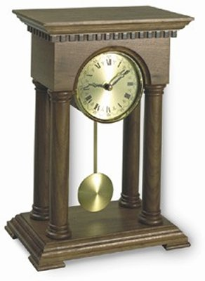

Numim fenomen periodic un fenomen care se repetă la intervale egale de timp. Intervalul de timp după care se repetă un fenomen periodic este
perioada acestuia.
Numim fenomen periodic un fenomen care se repetă la intervale egale de timp. Intervalul de timp după care se repetă un fenomen periodic este
perioada acestuia.
A.1. |
Fenomene periodice şi oscilaţii mecanice |
Existenţa noastră este reglată de fenomene care se repetă regulat: succesiunea zilelor, a săptămânilor, a lunilor, a anotimpurilor, a anilor. Pe parcursul fiecărei zile ne reglăm activităţile privind din când în când ceasul: indicaţiile acestuia se modifică în fiecare secundă.
Numim fenomen periodic un fenomen care se repetă la intervale egale de timp. Intervalul de timp după care se repetă un fenomen periodic este
perioada acestuia.
Unitatea de măsură pentru perioadă este, în Sistemul Internaţional de unităţi, secunda (simbol s).
 Provocarea 1A1−1
Provocarea 1A1−1
Cât este perioada după care se repetă trecerea minutarului unui ceas printr−o anumită poziţie de pe cadran? Exprimă această perioadă în secunde.
Oscilaţiile mecanice au fost primele fenomene pe care s−a bazat funcţionarea ceasurilor. Un astfel de ceas este cel cu pendul: un corp dens, atârnat la capătul unei tije, se balansează periodic de−o parte şi de cealaltă a poziţei verticale de echilibru (figura 1A1−1).
 Fig. 1A1−1. Ceas cu pendul.
Un mecanism ingenios menţine în mişcare pendulul pe parcursul mai multor zile, afişând în permanenţă minutele şi orele. În ceasurile moderne (electronice), în loc să mişcăm încoace şi−ncolo corpuri macroscopice, folosim oscilatori electrici, în care electronii sunt cei care oscilează.
Electronii sunt cele mai uşoare particule (au masa aproximativ 10-30 kg). Un electron este de zeci de miliarde de miliarde de miliarde de ori mai uşor decât corpul care balansează într−un ceas cu pendul! Fiind atât de puţin masivi, electronii pot fi puşi fără dificultate să oscileze de miliarde de ori în fiecare secundă, aşa cum se întâmplă într−un calculator personal sau într−un telefon mobil.
 Activitatea experimentală 1A1−1
Activitatea experimentală 1A1−1
Construieşte un pendul din lucruri aflate la îndemână şi măsoară perioada de oscilaţie a acestuia.
Pasul 1 Perforează cu vârful unui compas centrul capacului unei cutii cilindrice de plastic, cum sunt cele în care se păstrează filmele fotografice sau tabletele (figura 1A1−2).
Fig. 1A1-2. Pendul realizat din lucruri la îndemână.
Trece prin orificiu capătul unui fir de aţă lung de aproximativ 1,5 m. Leagă capătul firului trecut prin capac de centrul unei bucăţi de sârmă (dintr−o agrafă de birou) sau o jumătate de băţ de chibrit. Astfel, firul nu mai poate ieşi prin capac. Pune în cutie câteva monezi vechi de 100 de lei (care nu mai au astăzi nici o utilizare) sau câteva piuliţe mari. Fixează capacul şi pendulul este gata!
Pasul 2 Fixează la marginea de sus a tablei sau a unei uşi o clemă cu şurub (menghină de mână) şi leagă de tija clemei capătul liber al firului pendulului (figura 1A1−3).
 Atenţie! Dacă foloseşti o uşă, asigură−te că pendulul este atârnat pe partea uşii care se împinge, pentru ca să nu te lovească cineva
care ar intra pe uşă în timp ce lucrezi!
Atenţie! Dacă foloseşti o uşă, asigură−te că pendulul este atârnat pe partea uşii care se împinge, pentru ca să nu te lovească cineva
care ar intra pe uşă în timp ce lucrezi!
| Fig. 1A1-3. Atârnarea pendulului. |
Pendulul atârnă cu firul întins vertical. Aceasta este poziţia de echilibru a pendulului (figura 1A1−4).
| Fig. 1A1-4. Poziţia de echilibru a pendulului |
Pasul 3 Trage pendulul lateral, astfel încât firul să rămână mereu paralel cu tabla (sau cu uşa) şi eliberează−l (figura 1A1−5).
Fig. 1A1-5. Pornirea pendulului.
Observă oscilaţiile pendulului de o parte şi de cealaltă a verticalei.
Pasul 4 Măsoară durata a zece oscilaţii complete ale pendulului (o oscilaţie completă este o mişcare dus−întors, după care pendulul ajunge din nou aproape în aceeaşi poziţie şi mişcarea se repetă aproape identic).
Pasul 5 Calculează perioada de oscilaţie a pendulului folosind rezultatele măsurătorilor tale.
Provocarea 1A1−2
De ce oare oscilează pendulul?
Pendulul este în echilibru în poziţia în care rezultanta forţelor la care este supus este nulă. Aceasta se întâmplă atunci când firul este întins vertical: greutatea corpului pendulului şi tensiunea în fir au orientări opuse şi mărimi egale (figura 1A1−6).
| Fig. 1A1-6. Forţele care acţionează asupra corpului pendulului în poziţia sa de echilibru: rezultanta acestor forţe este nulă. |
Când pendulul este tras şi eliberat dintr−o poziţie în care firul este înclinat, rezultanta forţelor la care este supus corpul pendulului este nenulă şi îndreptată aproximativ către poziţia de echilibru (figura 1A1−7).
Astfel, pendulul accelerează spre poziţia de echilibru, câştigând viteză. Când ajunge în poziţia de echilibru, nu se poate opri brusc acolo: datorită inerţiei, îşi va continua mişcarea dincolo de poziţia de echilibru.
Ajuns dincolo de poziţia de echilibru, rezultanta forţelor la care este supus corpul pendulului este iarăşi nenulă şi îndreptată aproximativ tot către poziţia de echilibru (figura 1A1−8).
Astfel, pedulul pierde treptat viteza pe care o avea şi, în cele din urmă, ajunge în repaus, firul fiind înclinat la maximum. De aici începe să câştige viteză înspre poziţia de echilibru, trece prin aceasta şi se opreşte foarte aproape de locul din care a plecat. De aici încolo, mişcarea pendulului se repetă aproape identic.
O parte din energia pendulului este transferată treptat particulelor de aer întâlnite în cale. Oscilaţiile pendulului sunt din ce în ce mai "mărunte" şi, în cele din urmă, pendulul se "linişteşte" în poziţia de echilibru − toată energia sa de oscilaţie va fi fost transferată mediului.
Activitatea experimentală 1A1−2
 Lansează un pendul virtual şi observă−i oscilaţiile!
Lansează un pendul virtual şi observă−i oscilaţiile!
Toţi oscilatorii mecanici sunt caracterizaţi de poziţii de echilibru stabil. Odată scos din poziţia de echilibru, oscilatorul este supus unei forţe rezultante nenule, care încearcă să aducă oscilatorul în poziţia de echilibru (forţa de revenire). Inerţia oscilatorului şi viteza dobândită în procesul de revenire, fac ca oscilatorul să treacă dincolo de poziţia de echilibru, fiind supus astfel unei forţe de revenire, care încearcă din nou să−l aducă în poziţia de echilibru. Până când energia oscilatorului nu este transferată în întregime mediului, acesta oscilează, încercând mereu să−şi regăsească echilibrul şi "ratând" de fiecare dată.
Activitatea experimentală 1A1−3
Modifică parametrii pendulului pe care l−ai realizat la activitatea experimentală 1A1−1 (masa, lungimea firului, unghiul de la care începe să oscileze) şi încearcă să obţii un pendul care să "bată" secunda (adică trece dintr−o parte în cealaltă în fiecare secundă).
Prezintă în scris cum ai procedat, care sunt parametrii care influenţează semnificativ perioada de oscilaţie a pendulului şi care parametri au o influenţă nesemnificativă.